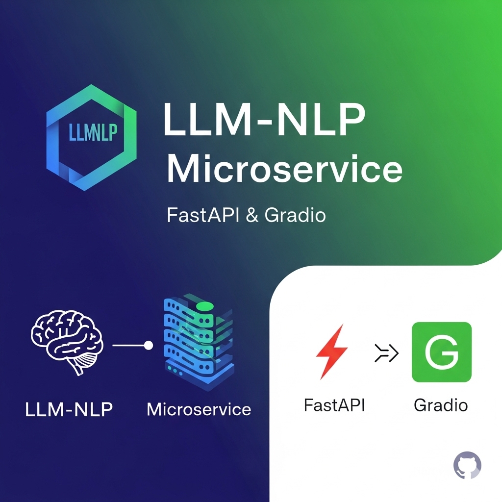

LLM NLP App
Modular FastAPI + Gradio stack delivering text summarization & rewrite with transformer models. Fully automated deploys to two Spaces via GitHub Actions.
Modular FastAPI + Gradio stack delivering text summarization & rewrite with transformer models. Fully automated deploys to two Spaces via GitHub Actions.
Interactive stock dashboard with fast price forecasts, news sentiment, and sanity checks. Supports multi‑ticker comparisons.
CPU‑only retrieval‑augmented QA using MiniLM, FAISS, extractive QA. Automates EDGAR ingestion for Risk/MD&A sections and returns citation‑grounded answers.
Recall‑optimized fraud classifier with prequential (time‑ordered) eval and drift tracking (PSI). Compares static vs adaptive update policies.
Audio -> MFCC feature maps -> CNN classifier with real‑time prediction via mic or .wav upload.
My path into data science, from hands-on projects to graduate research and machine learning at scale.
Focused on ML, statistics, AI, Algorithms, data engineering, and scalable analytics.